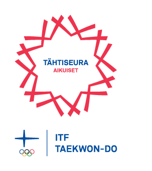

Helsingin yliopiston Taekwon-Do ry järjestää säännöllistä Taekwon-Don harjoittelua UniSportin puitteissa Helsingin keskustassa. Seura järjestää alkeiskursseja ja jatkuvaa harjoittelua Helsingin yliopiston, Aalto-yliopiston ja Hankenin opiskelijoille ja henkilökunnalle.
Vasta-alkajille järjestetään alkeiskurssi kahdesti vuodessa: kevätkaudella tammikuun puolivälistä alkaen ja syyskaudella syyskuusta alkaen. Koronatilanteen vuoksi kevään 2021 alkeiskurssin aloittamisesta ilmoitetaan myöhemmin.
{{ item.content }}
Helsingin yliopiston Taekwon-Do on saanut Olympiakomitean Tähtiseura-laatimerkin aikuisurheilussa.
